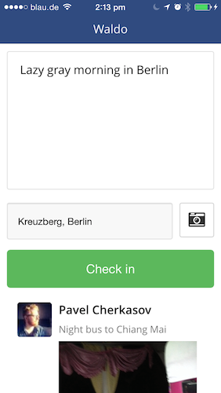
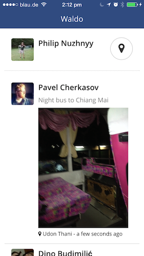
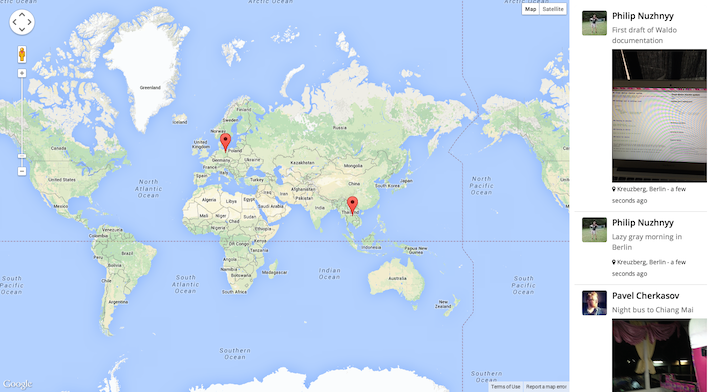

Waldo is a cross device checkin system that allows you to build location centric communities. Waldo is built on Meteor.
What it looks like

list of checkins on mobile

checkin interface on mobile

desktop dashboard tracking checkins in real time
How to configure
You will need two configuration files to configure Waldo - settings.json for development settings and production.settings.json for production. Both files have the same format
{
"cordova":{
},
"public" : {
"foursquare" : {
"clientId" : "<FOURSQUARE_APPLICATION_KEY>",
"clientSecret" : "<FOURSQUARE_APPLICATION_SECRET>"
},
"facebook": {
"permissions": [
"public_profile"
],
"profileFields": [
"name"
]
},
"checkins": {
"limit": <NUMBER_OF_LATEST_CHECKINS_TO_DISPLAY>
}
},
"private" : {
"facebook" : {
"applicationId" : "<FACEBOOK_APPLICATION_ID>",
"applicationSecret" : "<FACEBOOK_APPLICATION_SECRET>"
},
"imugr" : {
"apiKey" : "<IMUGR_API_KEY>"
}
}
}
Running Waldo
To run a local version of the dashboard on your browser
meteor --settings settings.json
To run an iOS mobile version of the app on your device/emulator
meteor run ios-device -p <local IP>:<local port>
Building and deploying Waldo
Push Waldo to Meteor
meteor deploy <name-of-your-fork>.meteor.com --settings production.settings.json
Build Waldo for iOS
meteor build <output-path> --server <name-of-your-fork>.meteor.com
Get involved
Waldo is work in progress. We currently have an iOS version of Waldo on our TestFlight. You can jump in and help us test it.